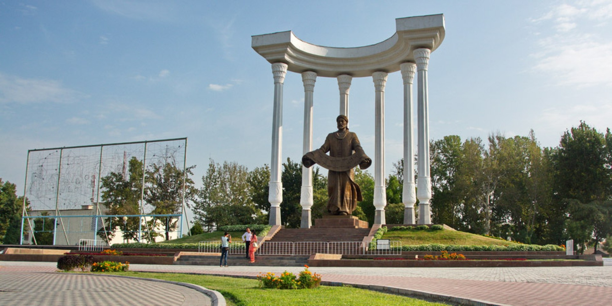

Фергана – Колыбель цивилизации
Климат
В Фергане погода такая же, как и во всей долине. Зима довольно мягкая и минусовая температура не на столько частое явление, но может и случится резкое похолодание. На такие моменты всегда нужно иметь в запасе теплые вещи. Благо это происходит не часто и если произойдет, то максимум на пару дней. Летом стоит стабильная жара, которую лишь иногда нарушает горячий сухой ветер называемый «гармсиль».
Подарки и сувениры
Ферганская долина славится своими ремесленническими мастерскими. И это не просто так! Самыми частыми подарками из Ферганы являются керамические изделия, поделки из дерева и конечно же произведения ткацкого искусства – Хан Атлас, Адрас и Шелк. Если потратить не много драгоценного времени и съездить в Риштан, который находится всего в 50 км от города, то Вы попадется в керамический рай! Именно в этом городке зародилась та самая уникальная роспись свинцовой глазурью и полуфаянсовая посуда известная как «чини».
Кухня
В Фергане, готовят очень необычный плов. Как и во всей долина для приготовления это яства используют специальный рис, называй девзира. Этот рис имеет необычный, красно-коричневый оттенок и благодаря своему вкусу, он идеально подходит для плова! Для получения неповторимого аромата традиционно используют чеснок. Его кладут целиком перед тем, как добавить рис. Также как и во всей долине, в Фергане растут просто замечательные фрукты. Дары местных садов и огородов продаются в огромном количестве не только на базарах и в магазинах, но и вдоль дорог при подъезде в город и прям около домов некоторых людей. Стоит это все очень дешево, так фруктов в Фергане огромное изобилие. Еще тут можно попробовать разные сладости и другие блюда национальной кухни, такие как халва, пахлава, манты, лагман, шашлык, шурпа и так далее.

История
Фергана находится в южной части Ферганской долины и считается одним из самых молодых городов Узбекистана. Его основали в 1876 году, после присоединения Кокандского ханства к Российской империи. Место строительство находилось всего в 12 км. от Маргилана и получило название Новый Маргилан. Одним из знаковых сооружений города считается военная крепость. Находясь в самом центре города, крепость начала образовывать вокруг себя все новые и новые улицы. Рядом с крепостью был построен большой парк, "Санъат саройи". В 1907 город переименовали в Скоболев, в честь военного губернатора Ферганской области Михаила Скоболева, и наконец в 1924 году город получает свое окончательное название – Фергана! Сейчас Фергана является одним из важнейших индустриальных центров в Узбекистане. Её заметный рост начался лишь в XX веке и достиг своего пика после обретения независимости. На данный момент город соответствует всем нормам по прекрасному провождению времени. В городе практически нет древних достопримечательностей, но это не сильно мешает наслаждаться красотой его тенистых улиц с вековыми деревьями, современной инфраструктурой, парками и безгранично добрыми людьми! В пригородах Ферганы также очень много прекрасных мест для отдыха. Например, в предгорьях Алайского хребта, среди безграничной зелени садов расположилось село Чимен, целебные источники которого известны по всей долине. Благодаря этим источникам был возведен крупнейший в Центральной Азии бальнеологический санаторий «Чимен».